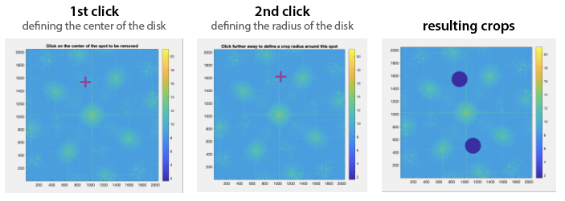

Interfero methods
clearFcrops
Clear the FcropParameters settings of the reference Interfero.
Synthax
obj.clearFcrops()
Description
obj.clearFcrops() resets the value of obj.Ref.Fcrop.
obj.clearFcrops(val) remove val, which can be a number, or a matrix of the same size as Itf.
obj can be a list (vector) of Interfero objects.
crop
Crop the image and reference interferograms.
Synthax
obj.crop()
obj.crop(Name, Value)
objList.crop(___)
obj2 = obj.crop(___);
Description
obj.crop() crops the obj.Itf and obj.Ref.Itf images, identically. A figure window opens, inviting the user to click on the image to define a square area centered in the middle of the image.
Interfero objects vectors can also be used with this method. The transformation applies then to all the objects of the vector.
If an output is used, obj2, then the object is not modified, and is duplicated.
Name-value arguments
Note
Specify optional pairs of arguments as Name1 = Value1, ..., NameN = ValueN, where Name is the argument name and Value is the corresponding value. Name-value arguments must appear after other arguments, but the order of the pairs does not matter.
Example:
obj.crop(___,'Center','Manual','Size',300)
The Name-Value arguments in the crop method are used to define how the reference area is chosen. This reference area is the one that will feature a no-tilt when the tilt correction will be applied. When some arguments are set to 'Manual', a figure appears so that the user can select this area, in 1 or 2 clicks.
'Center'With
crop(___,'Center','Manual'), the user has to first click on the center of the reference area. If the argument is set to'Auto', then this step is skipped, and the center is automatically set to the center of the image. Also, the user can indicate the coordinates of the center:crop(___,'Center',[x_c, y_c]).'Size'With
crop(___,'Size','Manual'), once the center is defined (either manually or automatically), the user has to click on the figure to define the shape of the area, around the center point. The user can also indicate the dimensions of the reference area:crop(___,'Size',Npx)for a square area, orcrop(___,'Size',[Nx, Ny])for a rectangular area.'twoPoints'Instead of using the
'Center'and'Size'keywords, one can also click on two opposite corners of the reference area, usingcrop(___,'twoPoints',true).'params'One can also direclty write the coordinates of the crops, using
crop(___,'params', [x1, x2, y1, y2]). In this case, no figure opens.
crossTalkCorrection
Correct for the crosstalk on 2-color cameras.
Synthax
[objG2, objR2] = crosstalkCorrection(obj1, obj2);
Description
obj1 and obj2 are supposed to be the two (vectors of) interferograms originating from the same 2-color camera sensor. Because of the cross-talk, some intensity of one color leaks over the dexels of the other color. To correct for this effect and retrieve the two original color images objG2 and objR2, there exists an algorithm that this method calls. The correction depends on two leakage parameters, which are contained in the MI.CGcam.Camera object. Hence, it is important to properly indicate the color camera when defining the microscope. Here is an example:
% define the microscope
Cam = Camera('Silios');
Grat = CrossGrating('Gamma',39e-6);
CGcam=CGcamera(Cam,Grat,1.1931);
MI=Microscope(100,200,CGcam,'PhaseLIVE');
% import the images
Ref = importItfRef(folder,MI);
Itf = importItfRef(folder,MI);
Itf.Reference(Ref);
% create two corrected color images
[ItfG,ItfR] = Itf.splitColors();
[ItfGc, ItfRc] = crosstalkCorrection(ItfG, ItfR);
mean
Computes the average interferogram from a series of interferograms.
Synthax
obj = mean(objList);
Description
objList is a vector of Interferogram images. mean(objList) returns a single interferogram where the attributes Itf is an image that is the average of the Itf images of all the interferograms of objList. The method is also applied to the Itf.Ref Interfero object, so that the average is also performed on the reference images.
QLSIprocess
Process and return the intensity and wavefront images.
Synthax
Im = QLSIprocess(Itf, IL);
ImList = QLSIprocess(ItfList, IL);
ImList = QLSIprocess(___, Name, Value);
Description
Reference
Defines the reference interferogram of an Interferogram object.
Synthax
obj.Reference(ref);
objList.Reference(ref);
objList.Reference(refList);
Description
ref is an Interfero object supposed to be the reference interferogram of the Interfero obj. The method Reference assigns ref as the reference of obj.
obj can be a list (vector) of interferogram. In that case, ref is assigned to all of them, without being duplicated.
ref can be a list (vector) of interferogram, as long as it has the same number of objects as obj. in that case, the reference interferograms of ref are assigned one by one to the interferograms of obj.
removeOffset
Substract an number, or an image to the interferogram image.
Synthax
obj.removeOffset()
obj.removeOffset(val)
obj2 = obj.removeOffset(___);
Description
obj.removeOffset() removes from Itf, by default, the value of the pixel of weakest intensity in the Itf image.
obj.removeOffset(val) remove val, which can be a number, or a matrix of the same size as Itf.
If an output argument obj2 is specified, obj is not modified, but duplicated.
Warning
It only removes the offset to the Itf attribute, not to the reference Ref.Itf.
sizeof
Returns aand displays the size of the object occupied on the RAM of the computer, in kiloytes (kb).
Synthax
val = obj.sizeof();
Description
>> Itf.sizeof;
1.01e+08 Ko
splitColors
Extract the two color interferograms from one interferogram acquired with a 2-color camera.
Synthax
[objG, objR] = splitColors(obj);
Description
This method creates two Interfero objects objG and objR, corresponding respectively to the green and red channels of the Interfero object coming from the 2-color camera. Here is a code example:
% define the microscope
Cam = Camera('Silios');
Grat = CrossGrating('Gamma',39e-6);
CGcam=CGcamera(Cam,Grat,1.1931);
MI=Microscope(100,200,CGcam,'PhaseLIVE');
% import the images
Ref = importItfRef(folder,MI);
Itf = importItfRef(folder,MI);
Itf.Reference(Ref);
% create two corrected color images
[ItfG,ItfR] = Itf.splitColors();
[ItfGc, ItfRc] = crosstalkCorrection(ItfG, ItfR);
square
Transforms rectangle interferograms to square interferograms by cropping.
Synthax
obj.square()
objList.square(___)
obj2 = obj.square(___)
Description
obj.square() crops the images of the Interfero object so that they are square. To define the size of the square, the smallest image dimension is considered (min([obj.Nx, obj.Ny])).
Interfero objects vectors can also be used with this method. The transformation applies then to all the objects of the vector.
If an output is specified, obj2, then the object is not modified, but duplicated.
spotRemoval
Removes undesired spots in the Interferogram Fourier space.
Synthax
obj.spotRemoval()
obj.spotRemoval(mask)
objList.spotRemoval(___)
obj2 = obj.spotRemoval(___);
[obj2, mask] = obj.spotRemoval();
Description
This methods opens a windows to diplay the Fourier transform of the interferogram. The user should then repeat 2-click sequences to remove all the undesired spots. The first click defines the position of the spot, and the second click defines the radius of the disc to be cropped. The sequence can be repeated many times and to stop it, any other key than the left-click should be pressed.
Alternatively, a mask can be specified at the input argument. In that case, no figure opens:obj.spotRemoval(mask).
If an Interfero object is specified as an output, obj2 = obj.spotRemoval(___);; the original object is not modified, but duplicated.
The mask defined by the user can also be returned as a second output argument, to possibly be used as an input for a forthcoming call of this method with another Interfero object.
splitPolars
Extract the 4 interferograms corresponding to the 4 polarizations of a polarized camera.
Synthax
[obj00,obj45,obj90,obj135]=splitPolars(obj)
Description
This method creates 4 Interfero objects obj00, obj45, obj90 and obj135, corresponding respectively to the 0, 45, 90 and 135° polarizations of a polarized camera.
sum
Return the sum of interferograms.
Synthax
obj = sum(objList);
Description
The methods return an Interfero object where the attributes Itf equals the sum of all the Itf images of the Interfero objects of the list, and idem for the Ref attribute.
+
Defines the addition between two Interfero objects: Itf1 + Itf2.
Synthax
obj = plus(obj1, obj2);
obj = obj1 + obj2;
obj = obj1 + obj2 + ... + objN;
Description
The method overload the operator + by defining the method plus. It actually adds the two interferograms obj1.Itf and obj2.Itf and stores the result in attribue Itf of the output obj. It does the same for the references obj1.Ref.Itf and obj2.Ref.Itf.
The method also work with several additions at a time: obj = obj1 + obj2 + ... + objN;